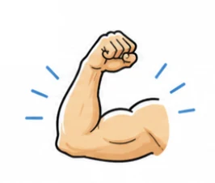
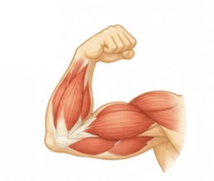
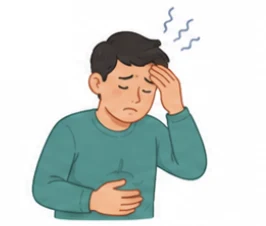
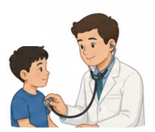

Language
Lesson 2
- 🔊 Sounds
- 📚 Words
- ✍️ Grammar
Five stops in 45 minutes
- 🔤
Unscramble
Team challenge
5 min - 🔊
Pronunciation
Strong & weak forms
12 min - 📚
Vocabulary
Health and fitness
12 min - ✍️
Grammar
Past simple vs present perfect
13 min - ✅
Wrap-up
Exit ticket + homework
3 min
By the end of this lesson, you will be able to…
- 🗣️
Knowledge
Use health words; say strong and weak forms of auxiliary verbs; use the past simple and the present perfect.
- 🤝
Core competence
Work well in pairs and teams; join in actively.
- ❤️
Personal qualities
Be ready for a healthy lifestyle; build self-study skills.
Warm-up
Unscramble the words
5 minutesUnscramble! e.g. H A E L T H → HEALTH
1. T I D E → DIET
2. X E E R C I S E → EXERCISE
3. T R E S S S → STRESS
4. H L A E T H Y → HEALTHY
5. E L E S P → SLEEP
6. H I T B A → HABIT
Pronunciation
Strong and weak forms of auxiliary verbs
12 minutesWhat are auxiliary verbs?
Can you give some examples? be · do · have · can · could · will …
They are helping verbs
They help the main verb make tenses, questions, negatives, ability…
Do you exercise? · She has started. · He can swim.
Weak at the start, strong at the end
Weak form
At the beginning of Yes/No questions — no stress.
Do you exercise? /də/
Strong form
At the end of short answers — stressed.
Yes, I do. /duː/
Weak and strong forms
| Weak | Strong | Weak | Strong |
|---|---|---|---|
| Do you …? /də/ | I do. /duː/ | Could we …? /kəd/ | We could. /kʊd/ |
| Does she …? /dəz/ | She does. /dʌz/ | Were they …? /wə/ | They were. /wɜː/ |
| Can I …? /kən/ | You can. /kæn/ | Has he …? /həz/ | He has. /hæz/ |
Mark and Nam again · 1–2
Mark and Nam again · 3–4
Work in pairs
1. Does she exercise? – Yes, she does. /dəz/ … /dʌz/
2. Were you eating healthily? – Yes, I was. /wə/ … /wɒz/
3. Do you eat vegetables? – Yes, I do. /də/ … /duː/
4. Can he get up early? – Yes, he can. /kən/ … /kæn/
Vocabulary
Health and fitness
12 minutesWhich word matches each picture?
- examine
- muscles
- treatment
- suffer from
- strength




Words 1–5, meanings a–e
1 treatment · 2 strength · 3 muscles · 4 suffer (from) · 5 examine
a. pieces of flesh that let our arms and legs move 3 · muscles
b. something that helps to cure an illness or injury 1 · treatment
c. the quality of being physically strong 2 · strength
d. to have a health problem 4 · suffer (from)
e. to look at someone’s body carefully to find a health problem 5 · examine
Use the correct forms of the words in Task 1
1. The doctor examined her carefully, but could not find anything wrong.
2. He is receiving treatment for his health problem.
3. Regular exercise can help you improve your muscle strength.
4. To build your muscles, you can try lifting weights.
5. Nam can’t sleep well. He is suffering from stress.
Grammar
Past simple vs present perfect
13 minutesWhen do we use them?
Past simple
• started and finished in the past
• completed at a specific time in the past
yesterday · last… · …ago · in 2020
Present perfect
• started in the past, still happening now
• completed in the very recent past
since · for · so far · just · recently
Compare
Past simple
You did a great job yesterday.
We lived in Ha Noi when I was little. Now we live in Hai Phong.
Present perfect
You have done a great job so far.
We have just moved to Hai Phong.
Form of the present perfect? have / has + past participle
Put the verbs in the correct form
1. He (see) saw the doctor yesterday.
2. She (suffer) suffered from a serious headache, but after treatment, she felt better.
3. Our living conditions (improve) have improved over the last few decades. Now people live much better.
4. The doctor (just, examine) has just examined her. Fortunately, the treatment is working.
Find the clue words
1 · saw
yesterday → a finished past time
2 · suffered
the headache is over — she felt better
3 · have improved
over the last few decades → up to now
4 · has just examined
just → very recent
Item 3: have been improved is also acceptable.
What do you do to keep fit and healthy?
Ideas: exercise this week · vegetables today · sleep last night · a new habit
What have you learnt today?
- 🔊
Sounds
Weak forms in questions, strong forms in short answers.
- 📚
Words
treatment · strength · muscles · suffer from · examine
- ✍️
Grammar
Past simple vs present perfect.
Exit ticket: say one new word and one grammar rule.
Homework
1. Do the Language exercises in the workbook.
2. Get ready for Lesson 3 — Reading.